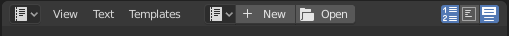
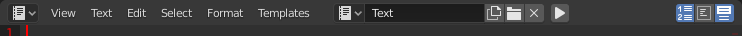

Text Editor¶
Editor này có thể dùng để viết script Python, các shader dựa trên script như OSL và GLSL, hay đơn giản là ghi chú dạng văn bản thuần. Để mở nó, bạn có thể chuyển sang workspace Scripting hoặc nhấn Shift-F11 để thay thế editor hiện tại.
Header¶
Text editor vừa mở còn trống, với một header rất đơn giản. Sẽ có thêm nhiều tùy chọn hơn khi một file văn bản được tạo hoặc mở.

Header của Text editor.¶

Header của Text editor khi đã tải văn bản.¶
- Editor Type
Nút chọn editor chuẩn.
- Menus
Các menu của editor.
- Resolve Conflict
Giải quyết xung đột file khi một file văn bản bên ngoài được cập nhật từ chương trình khác.
- Reload from Disk
Mở lại file từ ổ đĩa, ghi đè lên mọi thay đổi cục bộ.
- Make Text Internal
Chuyển data-block văn bản bên ngoài thành data-block nội bộ.
- Ignore
Ẩn thông báo cảnh báo cho đến khi file văn bản bên ngoài lại bị chỉnh sửa từ bên ngoài.
- Text
Một menu data-block để chọn văn bản hoặc tạo văn bản mới. Sau đó header sẽ thay đổi.
- Run Script (biểu tượng play)
Thực thi văn bản như một script Python Alt-P. Xem Template Menu.
- Show
Các công tắc cho số dòng, ngắt dòng và tô sáng cú pháp.
- Script Node Update (biểu tượng làm mới)
Khi một file OSL được mở, chức năng này cập nhật node Shader Script với các tùy chọn và socket mới từ script.
Main View¶
Gõ bàn phím sẽ tạo văn bản trong buffer văn bản.
Như thường lệ, nhấn, kéo rồi thả LMB sẽ chọn văn bản. Nhấn RMB sẽ mở menu ngữ cảnh.
Mẹo
Text editor cũng rất tiện khi bạn muốn chia sẻ blend-file với người khác: bạn có thể để lại một ghi chú giải thích file được tổ chức như thế nào. Hãy nhớ để editor hiển thị rõ khi lưu để họ nhìn thấy nó!
Cách dùng¶
Running Scripts¶
Phím tắt đáng chú ý nhất là Alt-P, vốn thực thi văn bản hiện tại như một script Python. Bạn có thể truy cập không chỉ các module Python chuẩn mà còn cả một loạt module riêng của Blender; xem Scripting & Mở rộng Blender.